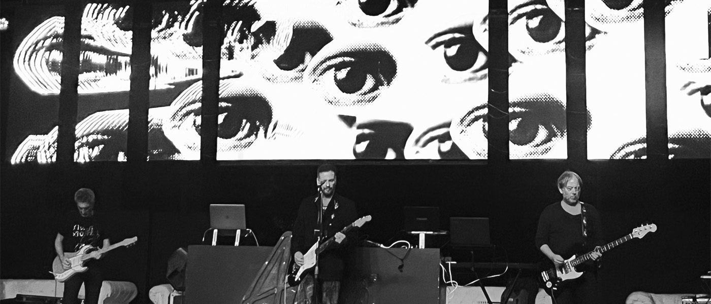

Arte Generativo
Visuales en Vivo
Autonomistas

Proyecto de visuales generativas desarrolladas en TouchDesigner para el show en vivo de Autonomistas. El enfoque estético retoma el lenguaje visual post-punk de los 80s, explorando el blanco y negro, la sobreexposición, las repeticiones y el feedback. Trabajé con sistemas en tiempo real que combinan comportamientos orgánicos con lógicas matemáticas para dar forma a un sistema vivo y cambiante.
Año: 2025
Herramientas: TouchDesigner
Categoría: Visuales generativas y audioritmicas